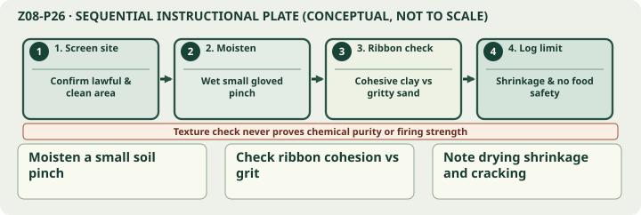

Z08-P26 · Rocks, minerals and materials · New manuscript
Clay Plasticity, Ribbon Screening and Drying Shrinkage
Distinguish cohesive clay from gritty silt and sand using non-food texture screening while noting drying-shrinkage cracking.
When it applies · Soil texture assessment for drainage, site selection, and conceptual material education.
Equipment · Small authorized soil sample, clean water drop, disposable gloves, wash water.

Actions
- Moisten a small soil sample with gloves on an authorized site to distinguish gritty non-cohesive sand, smooth powdery silt, and sticky cohesive clay that forms a short ribbon.[R17]
- Recognize that clay-rich soils expand when saturated and shrink and crack heavily as they dry, driving drainage ponding and structural instability.[R17]
- Treat field ribbon tests strictly as physical texture estimates, never as proof of firing quality or chemical safety for food contact.[R12, R17]
Failure recognition · Confusing fine glacial silt for plastic clay or drying raw clay rapidly produces crumbling cracks and poor drainage assumptions.[R12, R17]
Verify · Texture class (sand, silt, or clay-dominant) is recorded alongside drainage behavior and contamination cautions.[R12, R17]
Stop or change course · Stop handling suspect soils without gloves, near industrial runoff, or where public-land excavation is prohibited.[R09, R12]
Evidence and editorial notes
- R09 · Minnesota DNR · Minnesota State Park Rules and Resource Collecting Restrictions (Current web edition)
- Section: State park natural-feature protection · Conditions: Minnesota State Parks and Recreation Areas
Support: Removing rocks, minerals, soil, or live vegetation from Minnesota State Parks is prohibited to protect natural resources.
Limitations: Verify jurisdiction boundaries before picking up specimens even along shorelines or trails. · Conflicting evidence: None noted.
Editorial note: Bounds state-park material collection. · Specialist reviewer: Minnesota DNR resource manager
Primary source · checked 2026-11-25 - R12 · U.S. EPA · Protect Your Family from Lead in Soil and Dust (2025)
- Section: Soil contamination and urban/industrial lead hazards · Conditions: Soils near historic structures, roadways, mines, or industrial sites
Support: Soils and clays near older painted structures, smelters, tailings, or roadways may harbor lead or industrial contaminants.
Limitations: Visual texture or color cannot detect lead, arsenic, or chemical contaminants; do not use unverified soil/clay for cookware or food contact. · Conflicting evidence: None noted.
Editorial note: Separates clay plasticity checks from chemical safety. · Specialist reviewer: Environmental health and soil scientist
Primary source · checked 2026-11-25 - R17 · Minnesota Geological Survey (UMN) · Minnesota Geological Survey Maps and Regional Geology (Current web edition)
- Section: Minnesota geological mapping and educational materials · Conditions: Unverified clay or soil
Support: Texture and workability observations are screening cues. Unknown material does not qualify for food contact or heated service.
Limitations: A soil map or field texture cannot verify lead leaching, firing behavior or sanitation. · Conflicting evidence: Conditions are recorded in the A03 audit.
Editorial note: Bounds Z08 clay identification vs cookware claims. · Specialist reviewer: Soil scientist and ceramic/materials specialist
Primary source · checked 2026-11-25
Source lineage · New manuscript (Z08 P16 clay and soil) · Classification · New manuscript.